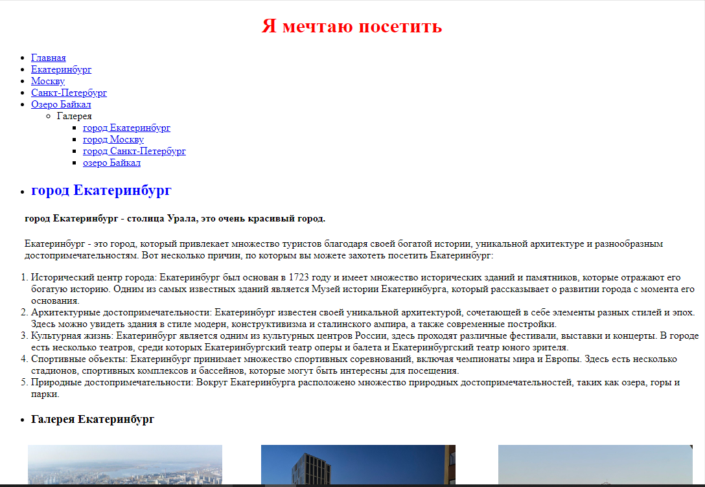
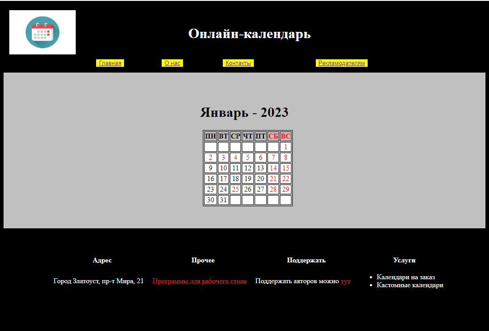
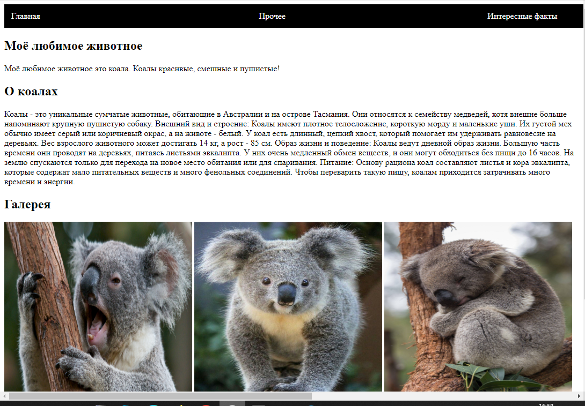

Обо мне
Меня зовут Прутов Александр. Я ученик 9 класса из города Златоуст. Занимаюсь созданием сайтов на языках HTML, CSS и JavaScript по курсу от Код Будущего.
| Обо мне | Курс | Мои работы | Прочая информация |
|---|
Меня зовут Прутов Александр. Я ученик 9 класса из города Златоуст. Занимаюсь созданием сайтов на языках HTML, CSS и JavaScript по курсу от Код Будущего.
Название курса: "Лёгкий вход в IT - Веб-разработка и Java". Курс идёт как один учебный год, в нём несколько модулей. На данный момент я завершаю первый модуль и уже могу создавать свои сайты и выгружать их в Интернет.
Моя первая работа - это сайт, на котором я рассказываю, какие города я хочу посетить и почему. Там я использовал не отдельный CSS документ, а тег/атрибут style.
Моя вторая работа - календарь. Данный календарь не интерактивен и он на один месяц, январь 2023-го года. В дизайне этого сайта я впервые использовал header - шапка страницы и footer - подвал страницы. Также использовался CSS.
Моя третья работа - сайт про любимое животное. Этот сайт интерактивен, так как я использовал JavaScript. Так же сайт содержит информацию о моём любимом животном.
Я сделал много сайтов, но в основном это практика, то есть сайты на одну тему, например работа с CSS. Здесь я оставлю ссылки только на полностью готовые сайты.